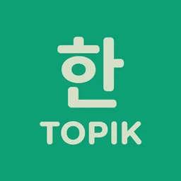
TOPIK 1~6급 한국어,
한 앱으로 끝까지
Korean for TOPIK 1–6,
all in one app
TOPIK 1〜6級の韓国語を、
ひとつのアプリで
단어 11,103개, 필수 문법 228개, 실생활 회화 60편, 실전 모의고사까지. 앱 화면과 뜻풀이·예문을 15개 언어로 볼 수 있고, 잊어버리기 직전에 다시 나오도록 FSRS가 복습 일정을 잡아 줍니다. 11,103 words, 228 essential grammar points, 60 real-life conversations and full mock exams. The app, definitions and examples come in 15 languages, and FSRS brings each word back right before you'd forget it. 単語11,103語、必須文法228項目、実生活の会話60本、本番形式の模擬試験まで。アプリの画面と意味・例文は15言語に対応し、忘れかけたタイミングでFSRSが復習を出してくれます。


무료 · 광고 포함 · 프리미엄 이용권은 선택 Free · Contains ads · Optional Premium pass 無料・広告あり・プレミアムパスは任意
단어, 문법, 회화, 시험까지Words, grammar, conversation, exams単語・文法・会話・試験まで
옆으로 넘겨 실제 화면을 보세요.Swipe through the actual screens.横にスクロールして実際の画面をご覧ください。
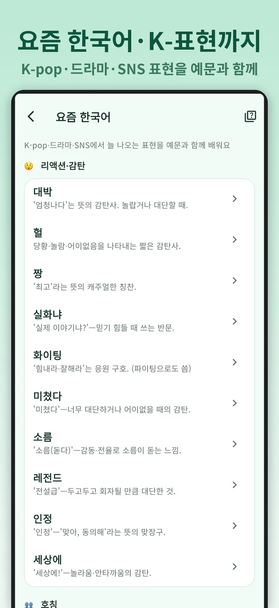
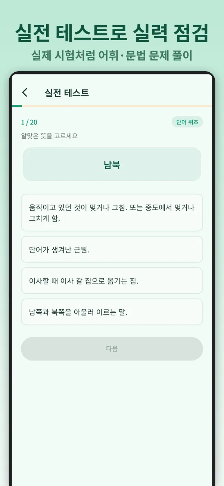
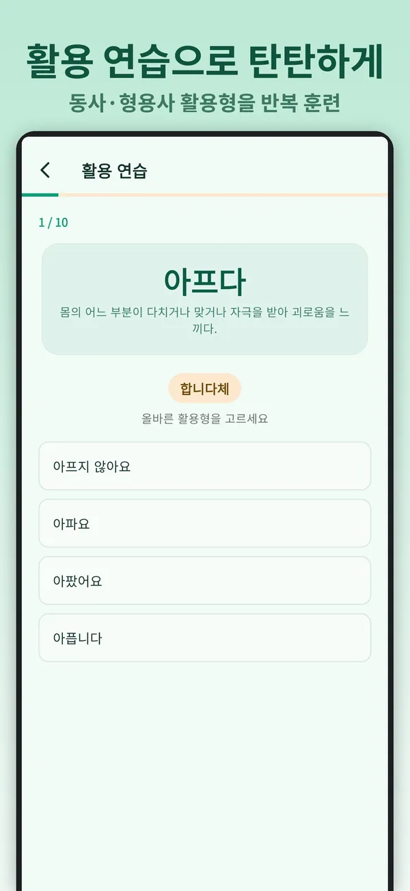
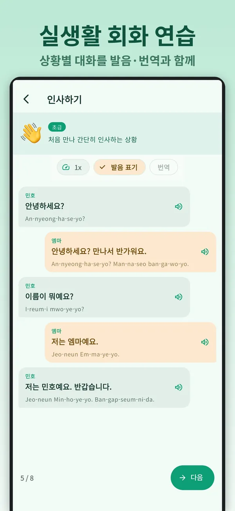
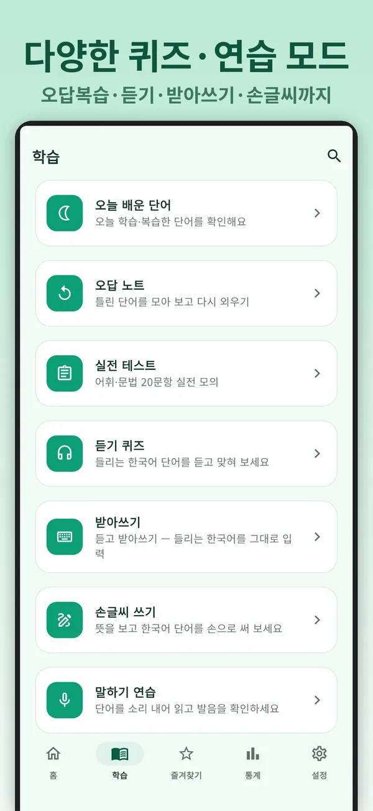
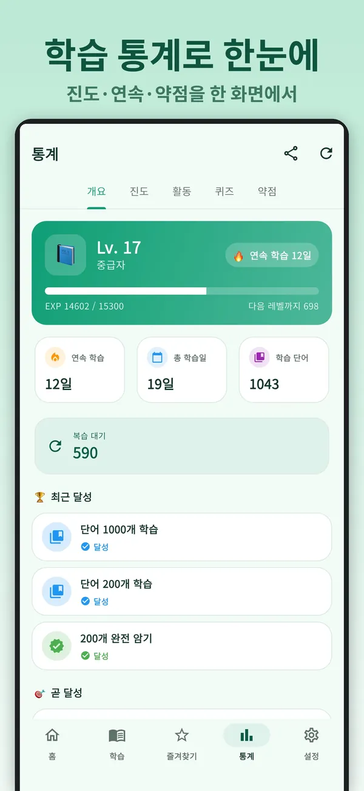
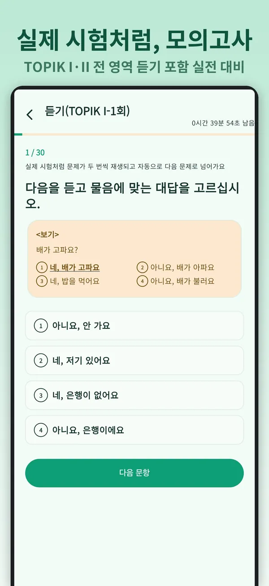
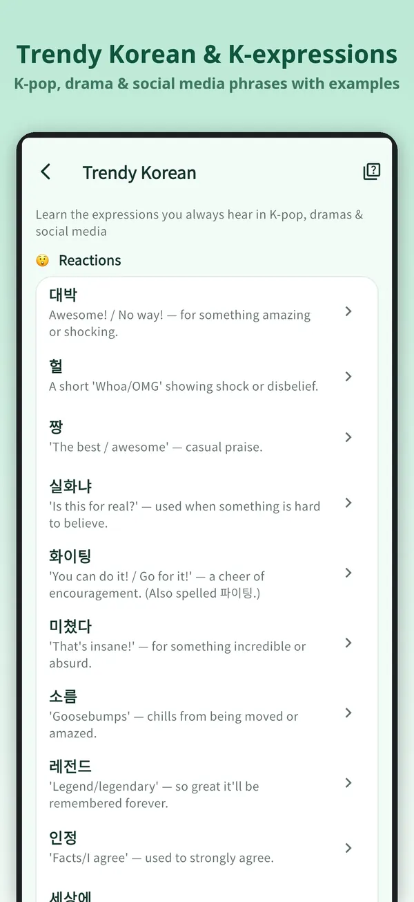
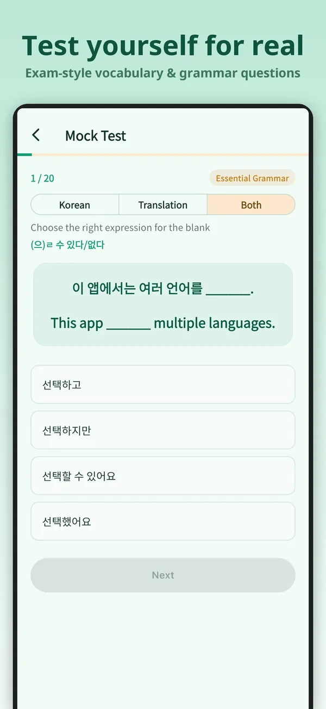
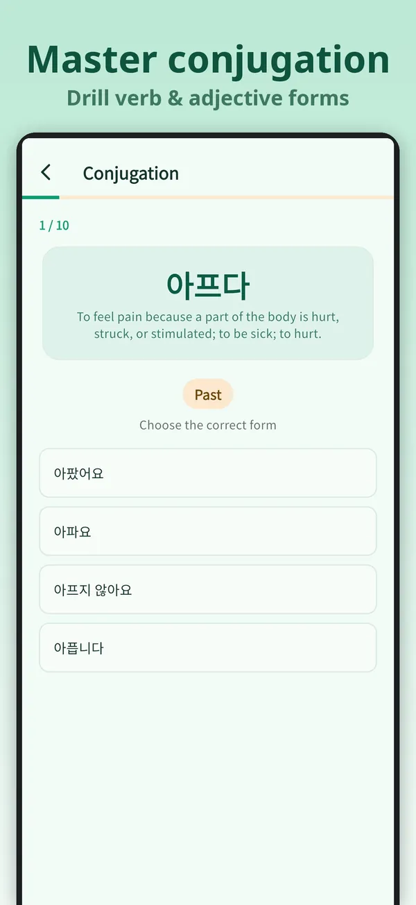
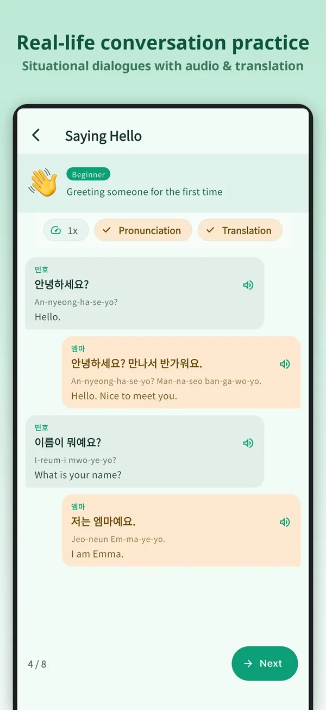
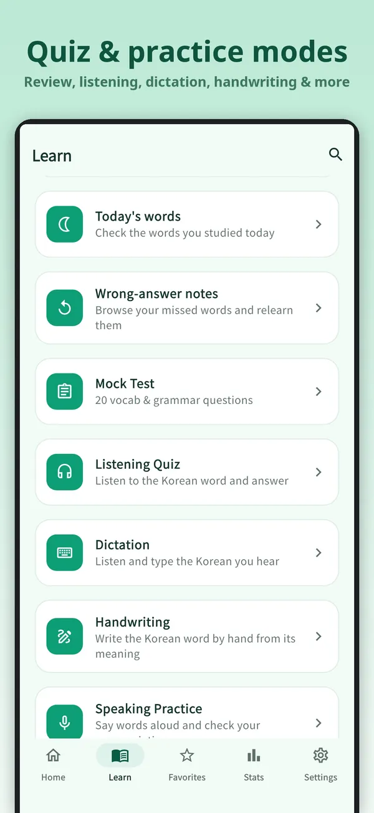
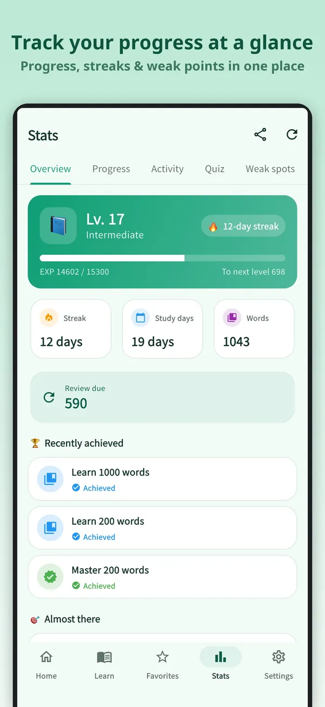
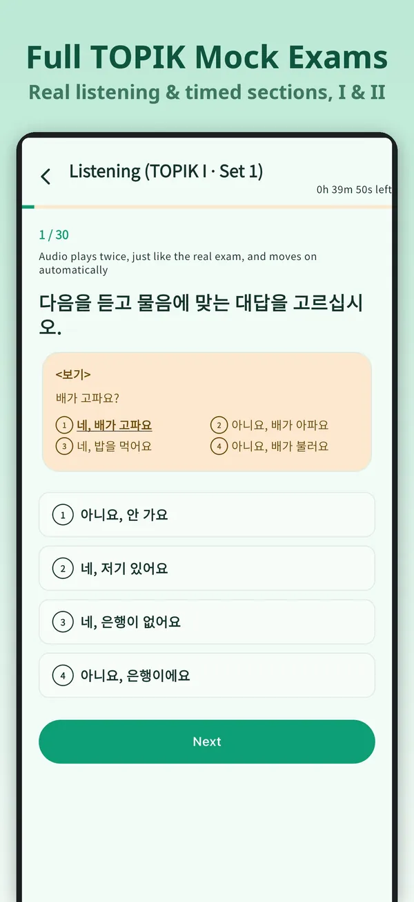
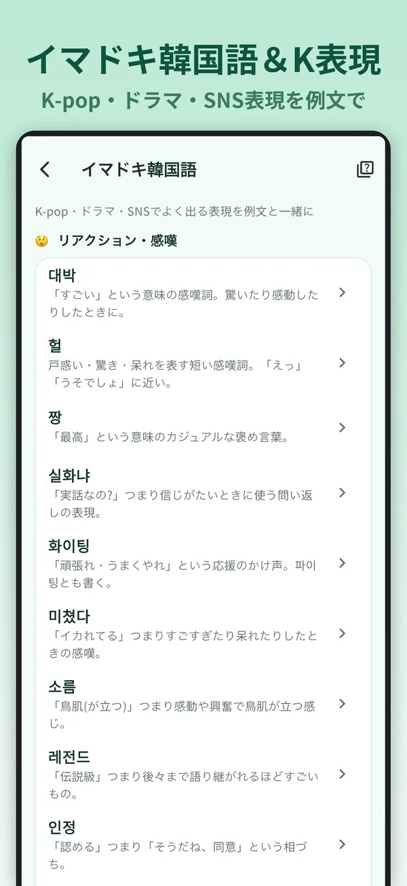
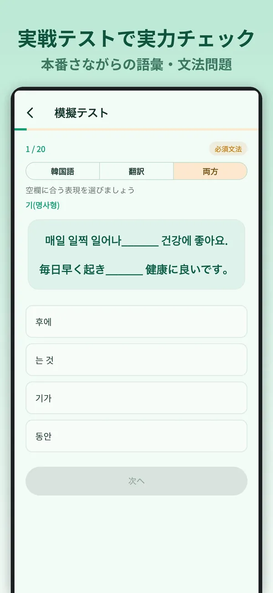
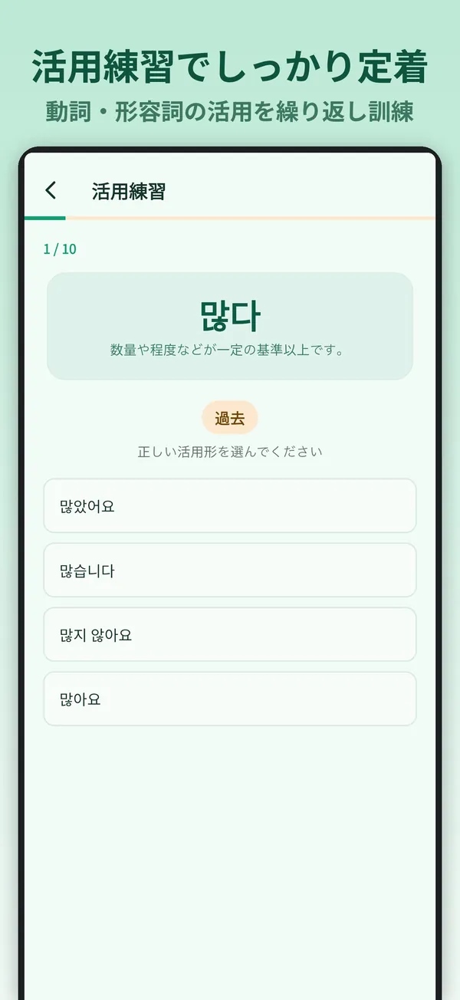
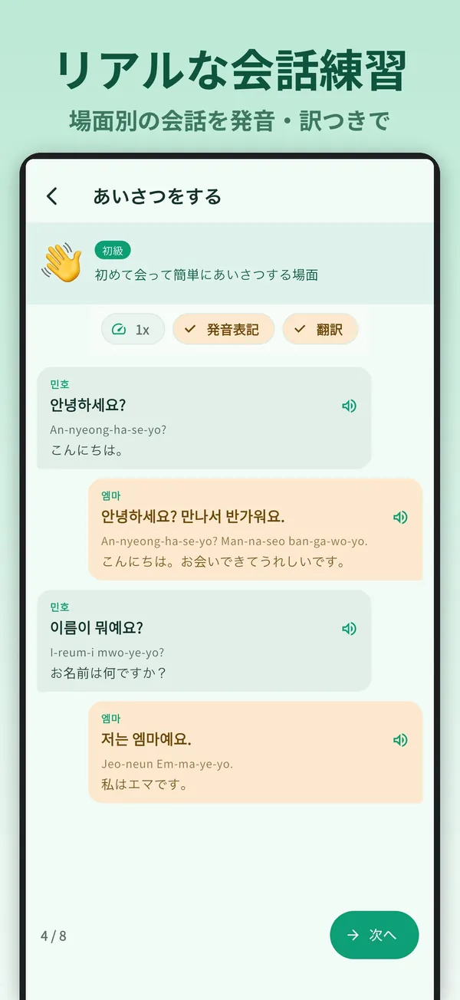
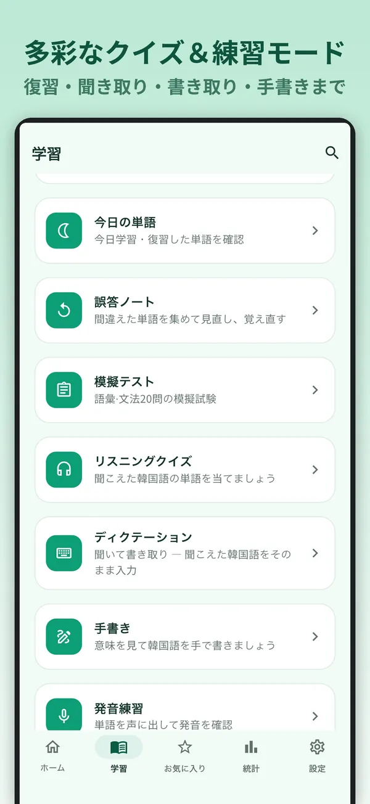
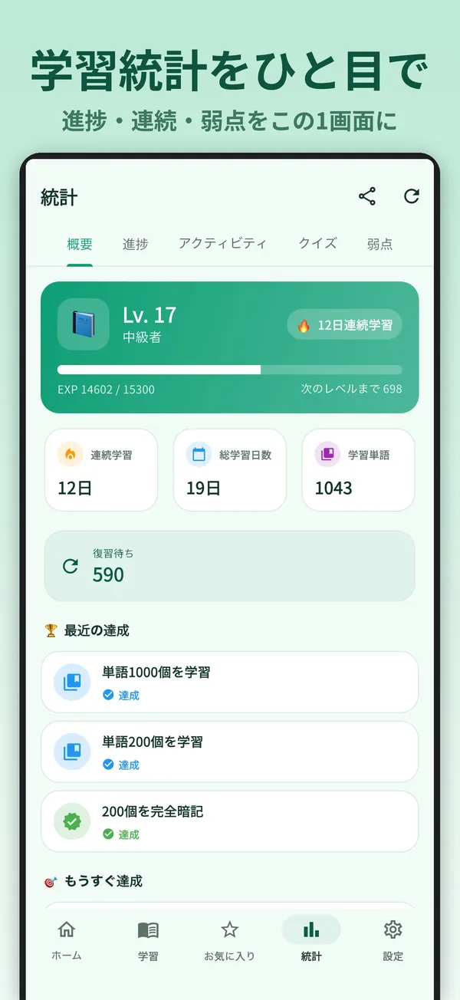
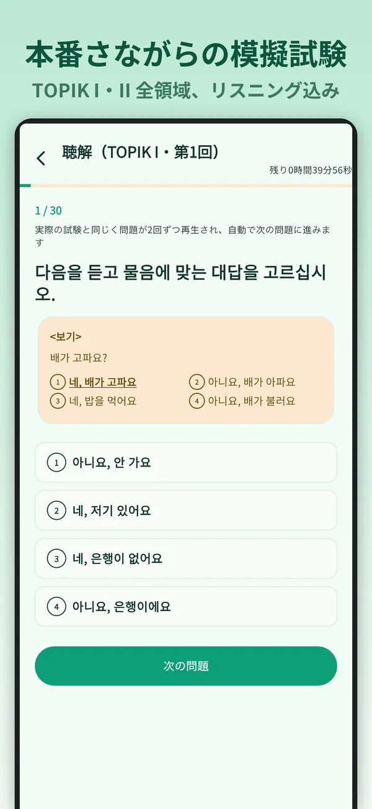
시험 준비에 필요한 것을 한곳에Everything TOPIK asks of you, in one place試験対策に必要なものを、ひとつに
한글 자모부터 6급 고급 어휘까지. 읽기·듣기·쓰기·말하기를 고루 연습합니다.From the Korean alphabet to level-6 vocabulary — reading, listening, writing and speaking.ハングルの子音・母音から6級の上級語彙まで。読む・聞く・書く・話すをバランスよく練習します。
단어 플래시카드Vocabulary flashcards単語フラッシュカード
1~6급 어휘 11,103개를 카드로 익힙니다. 뜻·예문·발음을 한 화면에서 보고 '모름·애매·알아요'로 답하면 다음 복습일이 정해집니다.All 11,103 words for levels 1–6 as cards. See meaning, example and pronunciation on one screen, rate yourself, and the next review is scheduled for you.1〜6級の語彙11,103語をカードで。意味・例文・発音を一画面で確認し、「わからない・あいまい・わかる」で答えると次の復習日が決まります。
필수 문법 228228 grammar points必須文法228
TOPIK 공식 초·중급 문법 목록 228개를 예문과 함께 정리했습니다. 퀴즈로 바로 확인할 수 있습니다.The official TOPIK beginner and intermediate grammar list — 228 patterns with example sentences and quick quizzes.TOPIK公式の初級・中級文法リスト228項目を例文つきで。クイズですぐに確認できます。
실생활 회화 60편60 conversations実生活の会話60本
초급·중급·고급 상황별 대화. 남녀 목소리를 구분한 자연스러운 한국어 음성으로 듣고, 속도를 조절해 따라 말해 볼 수 있습니다.Everyday scenes at three levels, voiced by natural Korean male and female speakers. Slow them down and repeat after them.初級・中級・上級のシーン別会話。男女の声を分けた自然な韓国語音声で聞き、速さを調整してシャドーイングできます。
한글부터 배우는 기초 과정 40강40-lesson foundation courseハングルから学ぶ基礎コース40講
자음·모음 입문부터 실생활 표현까지 40강. 처음 배우는 사람도 순서대로 따라가면 됩니다.From consonants and vowels to everyday expressions in 40 lessons — start from zero and follow along.子音・母音の入門から実生活の表現まで40講。はじめての方も順番に進めるだけです。
기출 단어Past exam words過去問の単語
실제 TOPIK 12회차에 자주 나온 단어를 모았습니다. 회차별 목록과 오디오 학습은 프리미엄에서 이용할 수 있습니다.Words that came up most across 12 real TOPIK tests. Lists by round and audio study come with Premium.実際のTOPIK 12回分によく出た単語を集めました。回別リストとオーディオ学習はプレミアムで利用できます。
실전 모의고사Full mock exams本番形式の模擬試験 프리미엄Premiumプレミアム
TOPIK I·II 형식 그대로 듣기·읽기·쓰기. 음성을 듣고 제한 시간 안에 풀어 영역별 점수를 확인합니다.TOPIK I and II in the real format — listening, reading and writing, timed, with a score for each section.TOPIK I・IIの形式そのままのリスニング・読解・作文。制限時間内に解き、領域別のスコアを確認します。
다양한 연습 모드Practice modes多彩な練習モード
듣기 퀴즈, 받아쓰기(한글 자판 내장), 손글씨 쓰기, 말하기, 활용, 문장 배열, 단어 찾기 퍼즐, 오답 복습까지.Listening quizzes, dictation with a built-in Korean keyboard, handwriting, speaking, conjugation, sentence building, word search and mistake review.リスニングクイズ、書き取り(ハングルキーボード内蔵)、手書き練習、発音、活用、文の並べ替え、単語探しパズル、間違い復習まで。
교과서 밖 한국어Korean beyond the textbook教科書の外の韓国語
드라마·SNS에서 쓰는 요즘 한국어부터 관용구, 높임말, 수 분류사까지. 관용구·높임말·수 분류사는 프리미엄 챕터입니다.Trendy Korean from dramas and social media, plus idioms, honorifics and counters. Idioms, honorifics and counters are Premium chapters.ドラマやSNSで使うイマドキ韓国語、慣用句、敬語、助数詞まで。慣用句・敬語・助数詞はプレミアム章です。
통계와 시험 D-dayStats and exam countdown統計と試験D-day
진도·활동·약점을 보여 주는 대시보드와 연속 학습일. 시험일을 등록하면 D-day를 알려 주고, 프리미엄에서는 목표 도달 예측까지 계산합니다.A dashboard for progress, activity and weak spots, plus your streak. Add your test date for a countdown; Premium forecasts whether you'll reach your target level in time.進度・活動・弱点のダッシュボードと連続学習日数。試験日を登録するとD-dayを表示し、プレミアムでは目標到達の予測まで計算します。
인터넷에서 모은 뜻이 아니라, 표준국어대사전 기준Based on the Standard Korean Dictionary, not a scrapeネットから集めた意味ではなく、標準国語大辞典が基準
한국어 뜻풀이는 국립국어원 표준국어대사전을 기준으로 정리했고, 학습자에게 어려운 풀이는 뜻이 바뀌지 않게 쉬운 말로 다듬었습니다. Korean definitions follow the Standard Korean Dictionary of the National Institute of Korean Language, with hard wording rewritten in plain Korean without changing the meaning. 韓国語の意味は国立国語院の標準国語大辞典を基準に整理し、学習者に難しい語釈は意味を変えずにやさしい言葉に直しました。
각 언어 번역은 한국어 뜻풀이와 예문에 맞춰 급수별로 여러 차례 검수합니다. 한자어에는 한자를 함께 보여 줘서, 높은 급수 단어도 이미 배운 한자와 이어서 익힐 수 있습니다. Translations are reviewed level by level against the Korean definition and example. Sino-Korean words show their Hanja, so harder words link back to characters you already know. 各言語の翻訳は、韓国語の語釈と例文に合わせて級ごとに何度も検収しています。漢字語には漢字を併記するので、上の級の単語も、すでに学んだ漢字とつなげて覚えられます。
Ninety of these bags are left.
このかばんは90個残っています。
The film's dramatic conflict was so tense the audience held their breath.
その映画は劇的な葛藤が張り詰めていて、観客は手に汗を握った。
앱에 있는 실제 카드 두 장Two actual cards from the appアプリの実際のカード2枚
언제 다시 볼지는 FSRS가 정합니다FSRS decides when you see a word again次に見るタイミングはFSRSが決めます
잊기 직전에 다시Right before you'd forget忘れる直前にもう一度
복습 일정은 최신 Anki에서도 쓰는 공개 간격 반복 알고리즘 FSRS로 계산합니다. 정해진 간격이 아니라, 카드마다 기억이 흐려지는 속도를 추정해 다음 복습을 잡습니다.Reviews are scheduled with FSRS, the open spaced-repetition algorithm used by modern Anki. Instead of fixed intervals, it estimates how fast each card is fading for you.復習の日程は、最新のAnkiでも使われる公開の間隔反復アルゴリズムFSRSで計算します。決まった間隔ではなく、カードごとに記憶が薄れる速さを推定して次の復習を入れます。
계정 없이 바로No account neededアカウントなしですぐ
학습 기록은 기기에 저장됩니다. 다른 기기에서 이어서 공부하고 싶을 때만 구글·애플 계정으로 로그인하면 되고, 로그인은 이 동기화에만 쓰입니다.Your history stays on your device. Sign in with Google or Apple only if you want to continue on another device — the sign-in is used for that sync and nothing else.学習記録は端末に保存されます。別の端末で続けたいときだけGoogle・Appleでログインすればよく、ログインはこの同期にのみ使われます。
내 언어로 한국어를Learn Korean from your own language自分の言葉で韓国語を
앱 화면과 단어 11,103개의 뜻풀이·예문을 아래 15개 언어로 볼 수 있습니다. 한국어 뜻풀이는 원문이고, 나머지 14개 언어는 모든 단어가 번역되어 있습니다.The app and all 11,103 definitions and examples are available in the 15 languages below — the Korean originals plus a full translation into each of the other 14.アプリの画面と11,103語の意味・例文を、下の15言語で利用できます。韓国語の語釈が原文で、ほかの14言語はすべての単語が翻訳されています。
핵심 학습은 무료입니다The core is free基本の学習は無料です
잠긴 급수나 단어는 없습니다. 프리미엄 이용권은 1개월·1년 단위로 구매하며 자동으로 갱신되지 않습니다.No level or word is locked. The Premium pass is bought for a month or a year and does not renew automatically.ロックされた級や単語はありません。プレミアムパスは1か月・1年単位の購入で、自動更新されません。
무료Free無料
광고 포함With ads広告あり
- 1~6급 단어 11,103개 전부All 11,103 words, levels 1–61〜6級の単語11,103語すべて
- 필수 문법 228개 · 회화 60편 · 기초 과정 40강228 grammar points · 60 conversations · 40 foundation lessons必須文法228・会話60本・基礎コース40講
- 퀴즈·받아쓰기·말하기 등 연습 모드Quizzes, dictation, speaking and other practice modesクイズ・書き取り・発音などの練習モード
- 기출 단어 '자주 나온 단어'Past exam words — most frequent過去問の単語「よく出る単語」
- 앱에서 모은 코인으로 광고 제거Remove ads with coins earned in the appアプリで貯めたコインで広告を削除
프리미엄Premiumプレミアム
월간 · 연간 이용권Monthly or yearly pass月間・年間パス
- 배너·전면 광고 완전 제거No banner or interstitial adsバナー・全面広告を完全に削除
- 실전 모의고사 · 관용구 · 높임말 · 수 분류사 챕터Mock exams, idioms, honorifics and counters chapters模擬試験・慣用句・敬語・助数詞の章
- 기출 단어 회차별 목록(12회분) + 오디오 학습Past exam words by round (12 rounds) + audio study過去問の単語・回別(12回分)+オーディオ学習
- 세션당 카드 수 무제한 · 자동 반복 학습Unlimited cards per session · auto-repeatセッションのカード数無制限・自動リピート
- 카드 방향 선택(뜻 → 단어 떠올리기)Card direction: meaning → word recallカードの向き選択(意味→単語の想起)
- 시험일까지 목표 도달 예측 · 하루 학습량 계산Exam-day goal forecast and daily workload試験日までの目標到達予測・1日の学習量の計算
자주 묻는 질문Questionsよくある質問
TOPIK I·II를 모두 다루나요?Does it cover TOPIK I and TOPIK II?TOPIK IとIIの両方に対応していますか?
네. 1~2급이 TOPIK I, 3~6급이 TOPIK II에 해당하며 6개 급수가 모두 들어 있습니다.Yes. Levels 1–2 correspond to TOPIK I and levels 3–6 to TOPIK II, and all six are included.はい。1〜2級がTOPIK I、3〜6級がTOPIK IIにあたり、6つの級すべてを収録しています。
한국어를 전혀 몰라도 쓸 수 있나요?Can I start with zero Korean?韓国語がまったくわからなくても使えますか?
네. 한글 자음·모음부터 시작하는 기초 과정 40강이 있고, 앱 화면과 뜻풀이를 내 언어로 볼 수 있습니다.Yes. The 40-lesson foundation course starts with the alphabet, and the app and its definitions are available in your own language.はい。ハングルの子音・母音から始まる基礎コース40講があり、アプリの画面と意味を母語で表示できます。
계정이 필요한가요?Do I need an account?アカウントは必要ですか?
아니요. 계정 없이 모든 기능을 쓸 수 있습니다. 다른 기기에서 이어서 공부하고 싶을 때만 구글·애플 계정으로 로그인하면 됩니다.No. Everything works without one. Sign in with Google or Apple only if you want to continue on another device.いいえ。アカウントなしですべての機能を使えます。別の端末で続けたいときだけGoogle・Appleでログインしてください。
Anki 덱과 무엇이 다른가요?How is this different from an Anki deck?Ankiのデッキと何が違いますか?
복습 방식은 같고 내용이 다릅니다. 뜻풀이는 표준국어대사전을 기준으로 정리했고, 번역은 급수별로 검수하며, 문법·회화·모의고사까지 이미 들어 있어 따로 만들거나 관리할 필요가 없습니다.Same scheduling idea, different content. Definitions follow the Standard Korean Dictionary, translations are reviewed level by level, and grammar, conversations and mock exams are already built in — nothing to import or maintain.復習の仕組みは同じで、中身が違います。語釈は標準国語大辞典が基準、翻訳は級ごとに検収済みで、文法・会話・模擬試験まで最初から入っているので、自分で作ったり管理したりする必要がありません。
잘못된 뜻풀이를 발견했어요.I found a wrong definition.誤った意味を見つけました。
해당 단어와 문제점을 teamstar13000@gmail.com으로 보내 주세요. 모두 읽고, 확인되면 다음 업데이트에 반영합니다.Email the word and what's wrong to teamstar13000@gmail.com. Every report is read, and confirmed fixes go into the next update.該当の単語と問題点を teamstar13000@gmail.com までお送りください。すべて目を通し、確認できたものは次のアップデートで修正します。
1급부터 시작해도, 6급으로 바로 가도 됩니다Start at level 1, or jump straight to level 61級から始めても、6級からでも
무료로 설치하고 오늘 첫 카드를 넘겨 보세요.Install for free and turn your first card today.無料でインストールして、今日最初のカードをめくりましょう。